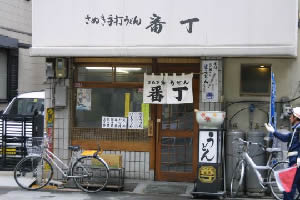

|
番 丁
|
|

|
| 在校時代に最も多く通ったうどん屋です。角刈りのお兄ちゃんが高高の制服を見ると１０円まけてくれたことを思い出します。個人的にはスタミナウドンも好きでしたが定番はなんといってもうどん定食。かけうどんとご飯とおかずの組み合わせで、友人とご飯のおかわり回数を競っていました。 ［s53卒・光中 優］ |
●ハガキでリクエストいただいた方は、卒年・性別で掲載させていただきました。ホームページからリクエストいただいた方は、お名前をそのまま掲載しています。不都合がございましたら、web担当宛てにご連絡ください。